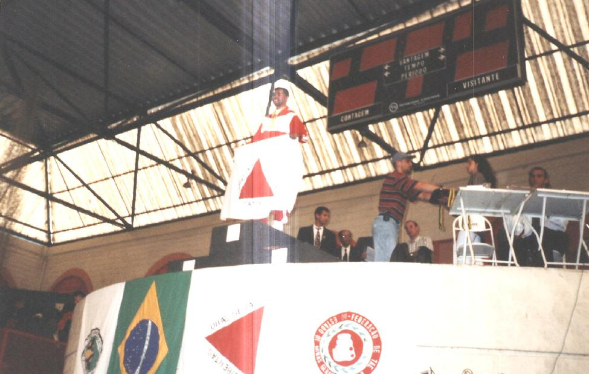
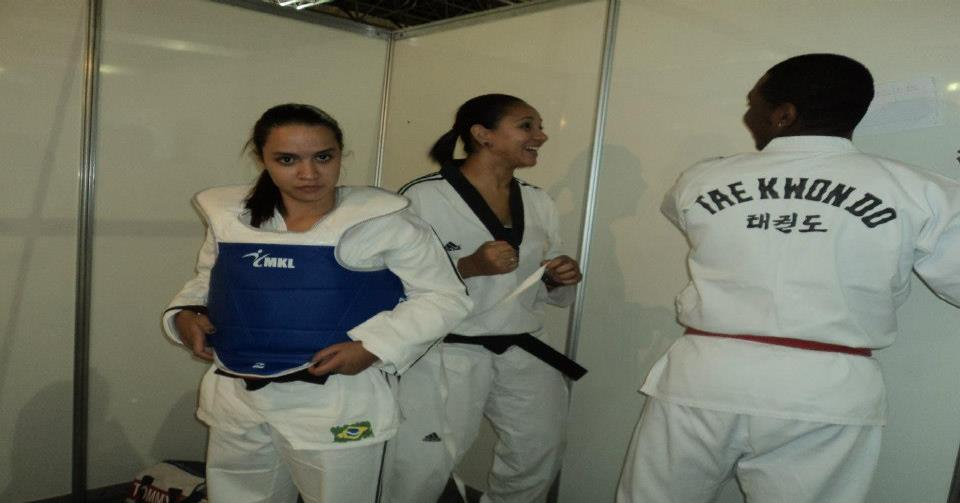

Nossa História *
Da formação de campeões esportivos nas comunidades da capital mineira à defesa de legislações nacionais em Brasília, conheça os passos do IAP Phoenix desde 2001.
"Mais do que formar atletas ou prestar assistência, nosso compromisso é despertar a dignidade humana em cada jovem e família acolhida."
Fundado por atletas e professores dedicados, com destaque para a liderança de Benedito de Jesus Magalhães ("Mestre Bene") — ex-técnico da Seleção Mineira de Taekwondo e professor aposentado do CEFET-MG —, o IAP Phoenix consolidou-se como um referencial de transformação comunitária através do esporte e da educação na Região Metropolitana de Belo Horizonte.
Inclusão pela Base
Democratizar o acesso à formação esportiva, ao reforço escolar e a direitos fundamentais para crianças e jovens em áreas de risco social, fornecendo ferramentas reais para a construção de seu futuro.
Autonomia Social
Ser reconhecido continuamente pela sociedade e pelos órgãos públicos como um centro de excelência em capacitação comunitária, integração de deficientes e cidadania participativa.
Pilares Fundamentais
Disciplina marcial, integridade, transparência pública, respeito à diversidade, inclusão social e compromisso inegociável com a proteção da infância e da juventude.
A Cronologia da Transformação
Fundação em Belo Horizonte
Em outubro de 2001 (com registro formal em janeiro de 2002 sob o CNPJ 05.685.682/0001-37), nasce o Instituto de Apoio Popular – IAP Phoenix, estabelecendo sua sede comunitária no bairro Alto dos Pinheiros, com foco em esportes olímpicos e amparo a famílias locais.
Título de Utilidade Pública Estadual (Lei nº 15.532)
A Assembleia Legislativa de Minas Gerais (ALMG) aprovou e o Governo do Estado sancionou a Lei nº 15.532, de 14/06/2005, concedendo o título de utilidade pública estadual, comprovando a relevância social dos serviços prestados pelo IAP Phoenix.
Protagonismo Nacional: PL 7.232/2010 na Câmara Federal
Através da Comissão de Legislação Participativa (CLP) da Câmara dos Deputados em Brasília, o IAP Phoenix formalizou a sugestão nº 152/2009 que resultou no Projeto de Lei nº 7.232/2010, visando tipificar como hediondo o crime de pedofilia no Brasil, sob relatoria do deputado Luiz Couto e presidência de Paulo Pimenta.
Eventos Esportivos Internacionais & Copa Centenário
Participação de destaque no Salão Internacional de Produtos Esportivos (Intersports Brazil Hall) com o apoio da Secretaria de Esportes do Governo de Minas Gerais, e inscrição da equipe Juvenil na tradicional Copa Centenário de Futebol Amador da Prefeitura de Belo Horizonte.
Amparo Habitacional, Reforço Escolar e Transparência
Articulação contínua com entidades comunitárias (como FEHAS e CONFEHAB) para defesa da moradia popular, segurança alimentar na RMBH, programas pedagógicos de reforço escolar e acompanhamento contábil regular junto ao Tribunal de Contas do Estado de Minas Gerais (TCE-MG).
Registros Oficiais do Portfólio



